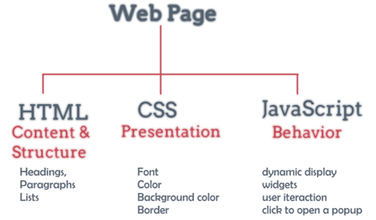

In simple words, it is a set of technologies that are used in developing the user interface of web applications and webpages. With the help of front-end technologies, developers create the design, structure, animation, and everything that you see on the screen while opening up a website, web application, or mobile app. It plays a major role in engaging the users and encouraging them to take action. If your application front-end works seamlessly, users would love to use it and recommend it to others. Thus, businesses that strive to enhance user interaction, efficiency, interactivity, and look & feel of their application cannot afford to ignore the importance of front-end technologies. The prime goal of front-end development tools and technologies is to help mobile and web developers increase their efficiency and make the development process quicker, simpler, and better.
Front-end is a term that involves the building of webpages and user interfaces (UI- Which user see on the browser) for web-applications. It implements the structure, design, behavior, and animation of everything you see on the screen when you open up websites, web applications, or mobile apps. The core 3 technologies that all modern front-end web developers work to master are HTML, CSS, and JavaScript.

1.Reusable templates and elements
2.Provide task automation
3.Offer code optimization and debugging
4.Enhances developers’ productivity
5.Ease the development process for developers